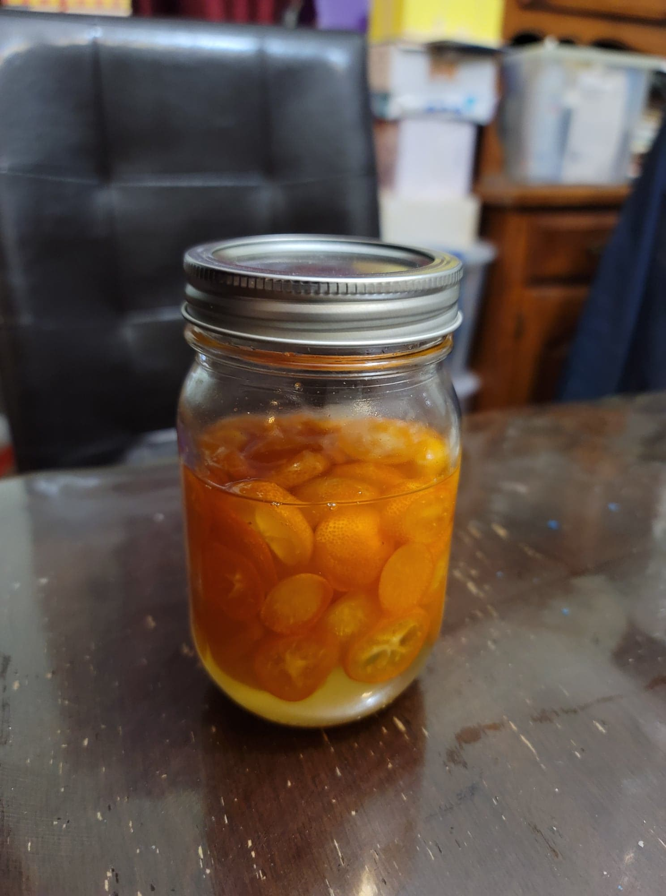

Geum Gyul Cheong (Kumquat Fermented Syrup)

Ingredients:
- 1 part in weight Kumquats, cleaned, sliced
- 1 part in weight Sugar
Instructions:
- Take equal parts in grams sugar and sliced kumquats. Layer the sugar and kumquats into a sterilized glass jar and cover loosely. Let ferment in a cool and dark location for 30 days. Mix with water or sparkling water to serve.